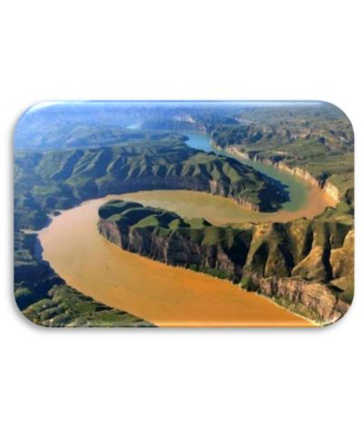

ปัจจัยการสร้างสรรค์ความเจริญของอารยธรรมจีน
สภาพภูมิศาสตร์และที่ตั้งของอารยธรรมจีน
1. ปัจจัยที่ตั้ง
จีนมีภูมิศาสตร์หลากหลายและมีปราการธรรมชาติรอบด้าน เช่น มหาสมุทรแปซิฟิกทางตะวันออก ภูเขาและทะเลทรายทางเหนือและตะวันตก ทำให้อารยธรรมจีนพัฒนาต่อเนื่องและได้รับอิทธิพลจากภายนอกน้อย
2. สภาพภูมิอากาศ
เขตอบอุ่น ฤดูฝนน้ำหลาก ทำให้พื้นที่อุดมสมบูรณ์ ฤดูแล้งฝนน้อย ชาวจีนพึ่งพาแม่น้ำและสร้างระบบชลประทาน
3. แม่น้ำ
แม่น้ำฮวงโห (แม่น้ำเหลือง) มีดินตะกอนสีเหลืองที่เหมาะกับการเกษตร ช่วยพัฒนาอารยธรรมและระบบชุมชน
4. ชนเผ่า
การรวมตัวของชนเผ่าริมแม่น้ำฮวงโหเพื่อบริหารจัดการน้ำ นำไปสู่การสร้างชุมชน การจัดการแรงงาน และเกิดระบบกษัตริย์
5.สภาพภูมิศาสตร์ของจีน
จีนเป็นดินแดนกว้างใหญ่และอุดมสมบูรณ์ โดยมีแม่น้ำฮวงโหหรือแม่น้ำเหลืองในภาคเหนือเป็นแหล่งสำคัญ
ที่มาของภาพ: Postjung. (2564). สาเหตุที่แม่น้ำเหลืองได้ชื่อว่าเป็นแม่น้ำวิปโยค แม่น้ำฮวงโห